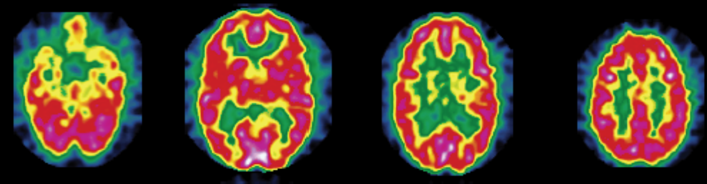
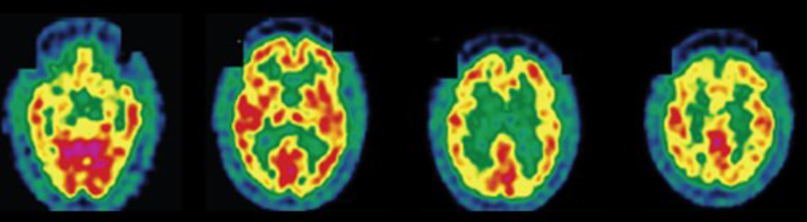
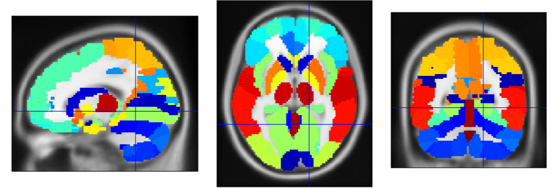
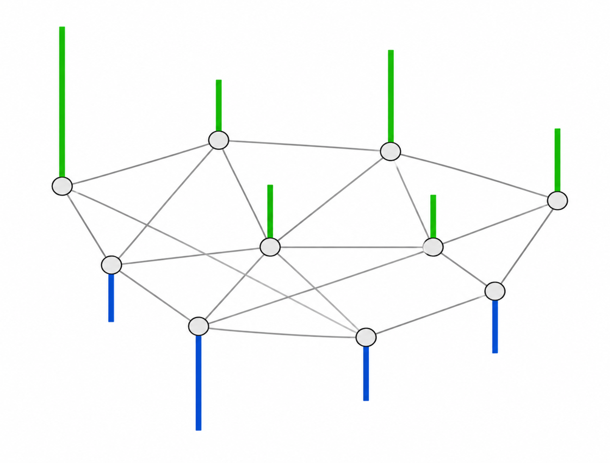

My article on chest and liver cine-MR frame forecasting with transformers and online-trained RNNs (ArXiv preprint)
My article on chest and liver cine-MR frame forecasting with transformers and online-trained RNNs (ArXiv preprint)
Graph-structured data classification based on spectral methods and the generalized likelihood ratio test
An application to Alzheimer's disease diagnosis from PET image data

1. Introduction
Many real-world datasets are not optimally represented in Euclidean space, as they naturally lie on irregular structures such as graphs (e.g., molecules, social networks, or sensor networks). Brain imaging data, in particular, often exhibit structured relationships between regions. Instead of treating all features independently, in this project, the data for each subject is modeled as a signal on a graph whose nodes represent anatomical brain regions, with edge weights encoding connectivity between regions. The classification task is formulated as a hypothesis test between two representative graphs—one built from healthy controls and one built from patients with Alzheimer's disease (AD)—using spectral properties of graph signals. This approach, building on the framework introduced by Hu et al. [1], is applied here to multi-dimensional graph signals: regional statistical features derived from positron emission tomography (PET) images. Specifically, I focus on the bandlimited graph-signal setting, where the underlying noiseless signal is assumed to concentrate in low graph frequencies and higher-frequency components are modeled as additive noise. From a medical perspective, early detection of AD-related brain changes via PET imaging before the appearance of symptoms may open pathways to earlier, more effective treatment. Although the application explored in this work is brain image classification, the core method—treating structured data as signals defined on graphs, transforming them using the graph Fourier transform (GFT), and performing classification via a generalized likelihood ratio test (GLRT)—is general and applies to any graph-structured data. Notably, the ideas on graph spectral analysis discussed here are closely related to the foundations of graph deep learning. In several early studies on graph convolutional neural networks (CNNs), convolution was defined via eigendecomposition of the graph Laplacian [2], while efficient polynomial or first-order approximations of spectral graph convolutions were introduced in later architectures such as ChebNet and the graph convolutional network (GCN) [3] [4]. More broadly, modern graph neural networks (GNNs) are often discussed from two complementary viewpoints: spatial or message-passing methods, which aggregate information from neighboring nodes, and spectral methods, which use graph filters defined via the graph-Laplacian eigenspectrum. The latter viewpoint, more directly connected to the field of signal processing and the GFT used in this work, remains particularly important, as spectral GNNs naturally capture global information and offer better expressiveness and interpretability [5]. Although I conducted this short project on graph signal processing more than ten years ago during my postgraduate studies, I revisit it in this article to highlight core concepts that remain relevant to modern machine learning (ML).
2. Materials and methods
2.1. Regional features derived from brain PET imaging
The data used in this work contain statistical features extracted from 142 segmented brain fluorodeoxyglucose-PET images. These images were provided by La Timone Hospital (Marseille) and correspond to $N_0 = 61$ healthy control subjects and $N_1 = 81$ patients with AD. Each brain image was segmented into $M = 116$ regions of interest (ROIs) using WFU-PickAtlas. Indeed, considering features characterizing brain ROIs globally instead of directly feeding raw voxel intensities to a classifier can help mitigate overfitting in a low-data context (142 images in total). For each region, the first four moments (mean, variance, skewness, and kurtosis) and the entropy were computed; they proved useful for discriminating between the two classes (healthy control and AD) in prior related work [6] [7]. The resulting data are stored as two tensors of different shapes $M$ × 5 × $N_k$, where $N_k$ denotes the number of subjects in class $k \in \{0, 1\}$.



2.2. Reference graph for each class
First, the 5-dimensional feature vectors containing the first four moments and entropy for each subject are normalized across brain regions, potentially improving performance. We denote by $\bar{y}_{r,s} \in \mathbb{R}^5$ the normalized feature vector associated with region $r$ and subject $s$. Subsequently, we compute the scalar feature \[ y_{r,s} = \alpha \, \bar{y}_{r,s} \:, \] where $\alpha \in \mathbb{R}^5$ represents region- and subject-independent linear combination coefficients. This allows constructing one fully connected, undirected graph per class, whose nodes each represent one anatomical brain region. Given two regions indexed by $i$ and $j$, the weight $W_{i,j}$ characterizes the overall similarity between the corresponding scalar features for a given class, as follows: \[ W_{i,j} = \text{exp} \left( -\sum_{s = 1}^{N_k}{(y_{i,s} - y_{j,s})^2} \right). \] For each subject $s$, the closer the features $y_{i,s}$ and $y_{j,s}$ are to one another, the closer $W_{i,j}$ is to 1. Conversely, the farther apart they are, the closer $W_{i,j}$ is to 0, thereby reflecting the notion of similarity. This specific similarity metric is called the Gaussian radial basis function (RBF) kernel.
2.3. The graph Fourier transform
For each class, we can compute the Laplacian $L$ of its reference graph, from its adjacency matrix $W$, as follows:
\[
L = D - W,
\]
where $D$ is the degree matrix, i.e., the diagonal matrix whose diagonal elements are:
\[
D_{i,i} = \sum_{j=1}^{M}{W_{i,j}} \:.
\]
$L$ is a real symmetric matrix, so it can be diagonalized in the following way:
\[
L = F \Lambda F^\text{T} \:,
\]
where $F$ is an orthogonal matrix and $\Lambda$ a diagonal matrix whose values are ordered in increasing order, i.e. $\Lambda_{i,i} = \lambda_i$ with $ \lambda_1 \leq \ldots \leq \lambda_{M} $.
Given a real-valued signal $y$ on the graph $\mathcal{G} = (V, E)$, i.e., a mapping from the set of vertices $S$ to $\mathbb{R}$, its Fourier transform on the graph $\mathcal{G}$ is defined as:
\[
\mathscr{F}_{\mathcal{G}}(y) = F^\text{T} y \:.
\]
The first eigenvectors correspond to smooth, low-frequency variations on the graph, while higher eigenvectors capture more oscillatory components. This is the graph analogue of classical Fourier analysis.

2.4. The generalized likelihood ratio test for signals with white, additive, Gaussian noise
Given the input graph signal $y \in \mathbb{R}^{M}$ for one subject to classify, we consider the following two competing hypotheses:
- $\mathcal{H}_0$: $y$ belongs to the reference graph $\mathcal{G}_0$ corresponding to the healthy subjects
- $\mathcal{H}_1$: $y$ belongs to the reference graph $\mathcal{G}_1$ corresponding to the patients with AD.
In this subsection, we will not use the graph structure of the data but only assume that $y$ contains white, additive, Gaussian noise. In other words, the observed input can be decomposed as: \[ y = x + \epsilon \:, \] where $x$ corresponds to the denoised signal and $\epsilon$ is an $M$-dimensional random variable following the distribution \[ p(\epsilon) = \frac{1}{(2 \pi \sigma^2)^{M/2}} \operatorname{exp} \left( - \frac{\lVert \epsilon \rVert_2^2}{2 \sigma^2} \right) \:. \] In other words, the likelihood of observing the signal $y$ on graph $\mathcal{G}$ given the Gaussian standard deviation $\sigma$ and true signal $x$ is: \[ l(x, \sigma; y) = \frac{1}{(2 \pi \sigma^2)^{M/2}} \operatorname{exp} \left( - \frac{\lVert y - x \rVert_2^2}{2 \sigma^2} \right) \:. \] Since $\sigma$ an unknown nuisance parameter, we estimate it by maximizing $l(x, \sigma; y)$ for fixed $x$. Differentiating the log-likelihood gives: \[ \frac{\partial \operatorname{ln} l}{\partial \sigma} (x, \sigma; y) = - \frac{M}{\sigma} + \frac{\lVert y - x \rVert_2^2}{\sigma^3} \:. \] This yields the following estimate for $\sigma$, conditional on $x$: \[ \hat{\sigma}^2 = \frac{\lVert y - x \rVert_2^2 }{M} \:. \] Plugging this expression back into the likelihood equation, we obtain: \[ l(x, \hat{\sigma}; y) = \left( \frac{e}{2 \pi \hat{\sigma}^2} \right)^{M/2} \:. \] In particular, this indicates that the likelihood of signal $x$ being the denoised version of $y$ increases when the standard deviation of the associated noise $\epsilon$ decreases. The generalized likelihood ratio for the two alternative hypotheses $\mathcal{H}_0$ and $\mathcal{H}_1$ is therefore: \[ \rho = \frac{l(\hat{x}_0, \hat{\sigma}_0; y)}{l(\hat{x}_1, \hat{\sigma}_1; y)} = \left( \frac{\hat{\sigma}_1}{\hat{\sigma}_0} \right)^{M} \:, \] where $\hat{x}_i$ and $\hat{\sigma}_i$ designates the maximum-likelihood estimates of $x$ and $\sigma$ under hypothesis $\mathcal{H}_i$. The expression of $\hat{x}_i$ is derived in the next section. Assuming equal class priors (i.e., both classes are equally probable), the incoming data is classified as corresponding to the healthy case when $\rho \geq 1$, i.e. $\hat{\sigma}_1 \geq \hat{\sigma}_0$. In other words, the class selected is that for which the input signal is the least noisy.
2.5. The bandlimited graph-signal assumption
We consider the bandlimited signal setting, under which a noiseless signal $x$ on graph $\mathcal{G}$ satisfies the following approximation: \[ \text{for all } k > K,\: \mathscr{F}_{\mathcal{G}}(x)_k \approx 0 \:, \] where $K$ is a cutoff frequency intrinsic to $x$. In other words, given the input graph signal $y$ to classify, we assume that most information is concentrated in its low-frequency GFT components, and that its components of order $k > K$ correspond to noise.
Using the orthonormality of the Laplacian eigenvector matrix $F$ of graph $\mathcal{G}$, we can rewrite: $$\begin{aligned} \lVert y - x \rVert_2^2 &= \lVert F (F^{\text{T}} y - F^{\text{T}} x) \rVert_2^2 \\ &= \lVert F^{\text{T}} y - F^{\text{T}} x \rVert_2^2 \\ &= \lVert \Phi^\perp(F^{\text{T}} y) + \Phi(F^{\text{T}} y) - F^{\text{T}} x \rVert_2^2 \\ &= \lVert \Phi^\perp(F^{\text{T}} y) \rVert_2^2 + \lVert \Phi(F^{\text{T}} y) - F^{\text{T}} x \rVert_2^2 \\ \end{aligned}$$ where $\Phi$ and $\Phi^\perp$ denote the orthogonal projections onto the subspace of $\mathbb{R}^{M}$ spanned by the first $K$ and last $M - K$ canonical basis vectors of $\mathbb{R}^{M}$. In particular, we have the inequality: \[ \lVert y - x \rVert_2 \geq \lVert \Phi(F^{\text{T}} y) \rVert_2 \:, \] and equality is achieved if and only if $x$ is chosen as: \[ \hat{x} = F \, \Phi(F^{\text{T}} y) \:. \] In particular, maximization of the likelihood $l(x, \sigma; y)$ yields this estimate for $\hat{x}$. Under the bandlimited signal assumption, we can also rewrite the maximum-likelihood estimate of $\sigma$ as: \[ \hat{\sigma}^2 = \frac{\lVert \Phi^\perp(F^{\text{T}} y) \rVert_2^2}{M} = \frac{\lVert y \rVert_2^2 - \lVert \Phi(F^{\text{T}} y) \rVert_2^2}{M}\:. \] The second equality can be obtained by setting $x=0$ in the formula for $\lVert y - x \rVert_2^2$ above—it essentially uses the preservation of the signal energy (i.e., norm) by the GFT. In the binary graph-signal classification task using the GLRT rule under the equal-prior hypothesis, class 0 is selected when $\hat{\sigma}_1 \geq \hat{\sigma}_0$, i.e. when: \[ \lVert \Phi(F_{\mathcal{G}_0}^{\text{T}} y) \rVert_2^2 \geq \lVert \Phi(F_{\mathcal{G}_1}^{\text{T}} y) \rVert_2^2 \:, \] where $F_{\mathcal{G}_0}$ and $F_{\mathcal{G}_1}$ represent the Laplacian matrices of graphs $\mathcal{G}_0$ and $\mathcal{G}_1$, respectively. The previous inequality can be rewritten as: \[ \sum_{k=1}^{K}{\left(F_{\mathcal{G}_0}^{\text{T}} y\right)_k^2} \geq \sum_{k=1}^{K}{\left(F_{\mathcal{G}_1}^{\text{T}} y\right)_k^2} \:. \] In other words, the input signal is assigned to the class whose graph Fourier basis yields the largest low-frequency projection energy. This corresponds to the "simple matched signal detection" classifier proposed in [1].
3. Results and future directions
The classifier is evaluated using a leave-one-out procedure with the first $K=3$ graph-Laplacian eigenvectors, ordered by increasing eigenvalue, for each class. The positive class corresponds to patients with Alzheimer's disease. The five features in the coefficient vector $\alpha$ are ordered as: mean, variance, skewness, kurtosis, and entropy.
| Linear feature combination | Coefficients $\alpha$ | Sensitivity | Specificity | F1 score |
|---|---|---|---|---|
| Equal weighting of all five features | (0.2, 0.2, 0.2, 0.2, 0.2) | 0.91 | 0.69 | 0.85 |
| Mean/variance-focused weighting | (0.5, 0.5, 0.0, 0.0, 0.0) | 0.67 | 0.95 | 0.78 |
These results suggest that simple linear combinations of the five regional statistics can already produce meaningful classification behavior, with different trade-offs between sensitivity and specificity.
So far, only a few arbitrarily selected values of $\alpha$ were evaluated. Optimizing $\alpha$ to maximize classification performance and comparing the method with baseline ML classifiers are left as future work. Future directions include considering similarity measures other than the Gaussian kernel and relaxing the bandlimited graph-signal assumption. Furthermore, using more data would help validate performance more robustly while allowing the exploration of GNN-based classifiers.
Data and code availability
The data and code used in this project are publicly available online [Github link].
Acknowledgments
This work was conducted jointly at Centrale Mediterranée and Fresnel Institute under the supervision of Mouloud Adel. Image processing, including tensor construction and statistical feature design, was conducted by Imène Garali. Further tensor-data exploration and preprocessing were initially conducted together with Yassine Zniyed and Kaoutar Abdelalim.
References
- Chenhui Hu, Jorge Sepulcre, Keith A. Johnson, Georges E. Fakhri, Yue M. Lu, and Quanzheng Li, "Matched signal detection on graphs: Theory and application to brain imaging data classification", NeuroImage (2016)
- Joan Bruna, Wojciech Zaremba, Arthur Szlam, and Yann LeCun, "Spectral networks and locally connected networks on graphs", arXiv preprint arXiv:1312.6203 (2013)
- Michaël Defferrard, Xavier Bresson, and Pierre Vandergheynst, "Convolutional neural networks on graphs with fast localized spectral filtering", Advances in neural information processing systems (2016)
- Thomas N. Kipf and Max Welling, "Semi-supervised classification with graph convolutional networks", arXiv preprint arXiv:1609.02907 (2016)
- Deyu Bo, Xiao Wang, Yang Liu, Yuan Fang, Yawen Li, and Chuan Shi, "A survey on spectral graph neural networks", arXiv preprint arXiv:2302.05631 (2023)
- Imène Garali, Mouloud Adel, Salah Bourennane, and Eric Guedj, "Histogram-based features selection and volume of interest ranking for brain PET image classification", IEEE journal of translational engineering in health and medicine (2018)
- Imène Garali, "Aide au diagnostic de la maladie d'Alzheimer par des techniques de sélection d'attributs pertinents dans des images cérébrales fonctionnelles obtenues par Tomographie par Emission de Positons au 18FDG", Aix-Marseille Université, Ph.D. thesis (2015)